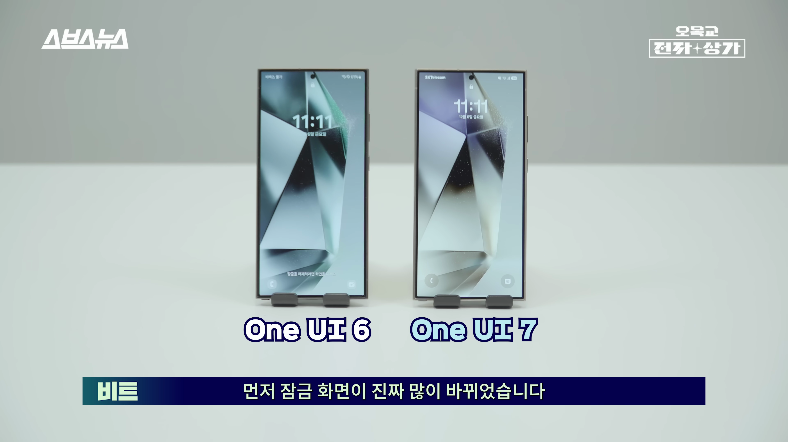
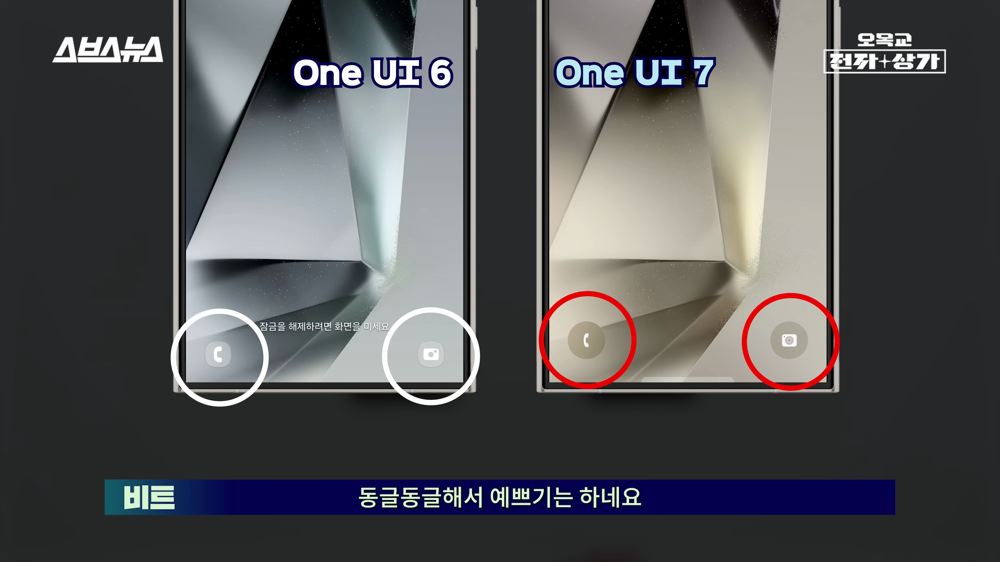
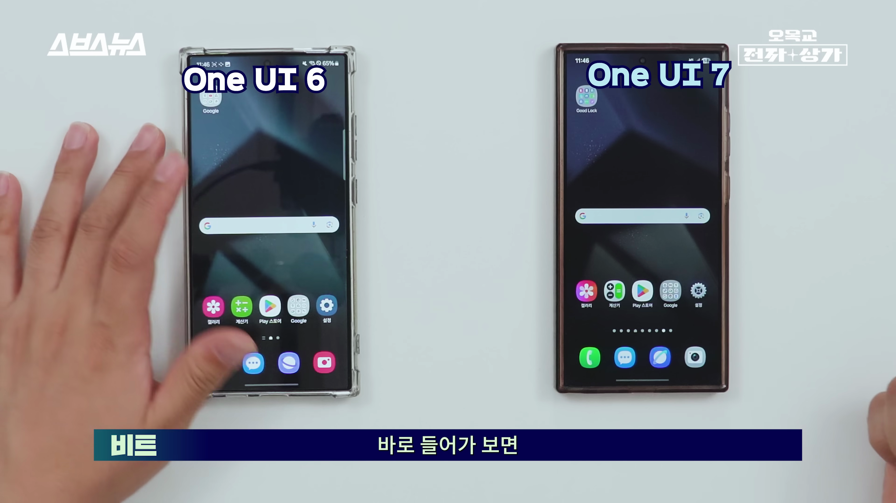
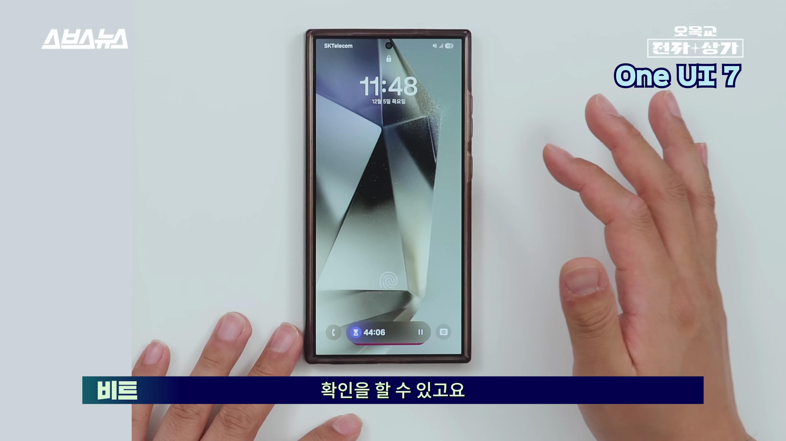
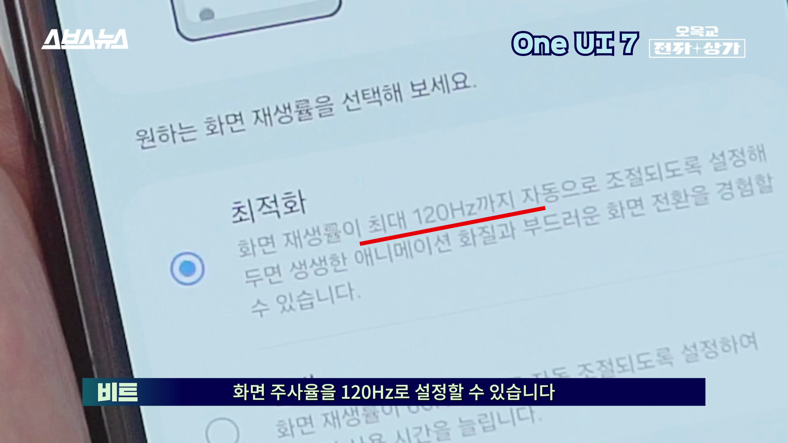
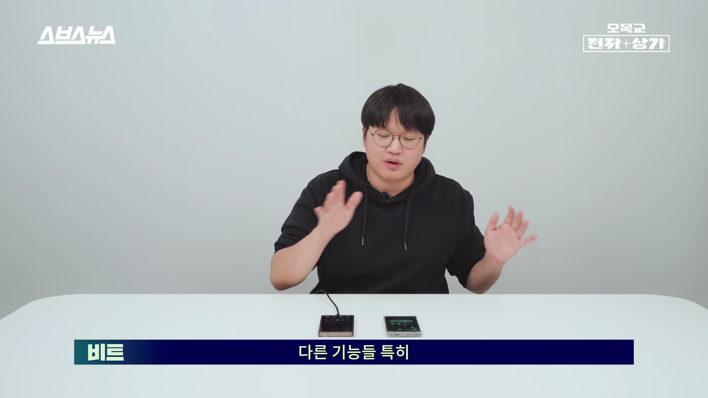

이번 포스트에서는 삼성의 최신 스마트폰 소프트웨어 업데이트인 ‘원 UI 메타’를 통해 변화된 UI 디자인과 새로운 기능들을 살펴보겠습니다. 사용자 경험을 극대화하기 위한 삼성의 노력은 눈에 띄는 발전을 이루었으며, 특히 디자인적인 부분에서 심리적 만족감을 주는 개선이 있었습니다.

UI 혁신의 시작
- 원 UI 메타 발표와 함께 변화된 디자인
- UI를 보고 느낀 최초의 반응
삼성의 새로운 원 UI 메타가 발표되었습니다. 발표 당시의 디자인은 많은 변화를 겪었고, 사용자는 처음에 놀라움을 느꼈습니다.

새로운 잠금 화면
- 잠금 화면의 시각적 변화
- 달라진 아이콘과 컴포넌트의 크기
잠금 화면은 더욱 깔끔하게 다듬어졌고 폰트와 아이콘이 변화했습니다. 아이콘의 크기와 모양이 더 매력적이게 업데이트되었습니다.

실시간 알림 시스템
- 사용자 활동을 한 눈에 볼 수 있는 기능 추가
- 테마에 알맞은 색상과 디자인
새롭게 추가된 실시간 알림 시스템에서 음악과 시계 등 사용자 활동을 쉽게 확인할 수 있게 되었습니다.

전반적인 디자인 변화
- 이전 버전보다 컬러풀하게 변화
- 아이콘과 앱 갤러리의 변화
전 버전 표준의 디자인을 비교했을 때, 아이콘과 갤러리가 훨씬 더 컬러풀하게 변화하여 시각적 즐거움을 주었습니다.
부드러운 애니메이션
- UI 전환 애니메이션의 변화
- 부드러운 화면 전환 경험
이번 원 UI 메타는 전체적으로 부드러운 UI 전환과 애니메이션을 제공하여, 사용자에게 보다 매끄러운 경험을 선사합니다.

다양한 위젯 설정
- 위젯의 크기 및 배열 조정 기능
- 사용자 맞춤형 설정
위젯 크기 및 배치의 변경이 가능해지며, 사용자 맞춤형 알림 창이 더욱 돋보이게 되었습니다.

효율적인 절전 모드
- 120Hz 주사율을 절전 모드에서도 지원
- CPU 속도 조정 기능
절전 모드에서도 120Hz 주사율을 설정할 수 있어 잦은 화면 전환이 필요할 때 유용합니다.
자동 메시지 삭제 기능
- 1회용 비밀번호 메시지 자동 삭제 설정
- 사용자 편의성 향상
이제 OTP 메시지가 자동으로 24시간 이내에 삭제되도록 설정할 수 있어 개인정보 보호에 더 유용합니다.

총평
- 삼성의 UI 혁신과 사용자 경험 개선
- 첫 인상의 중요성 강조
원 UI 메타는 삼성의 우수한 디자인과 사용자 경험 향상을 보여주는 뚜렷한 예시이며, 이전보다 심리적으로 더 만족스러운 UI입니다.
Tags: #삼성 #원 UI 메타 #UI 디자인 #사용자 경험 #메시지 삭제 기능 #모바일 혁신 #스마트폰 기능 #최신 업데이트